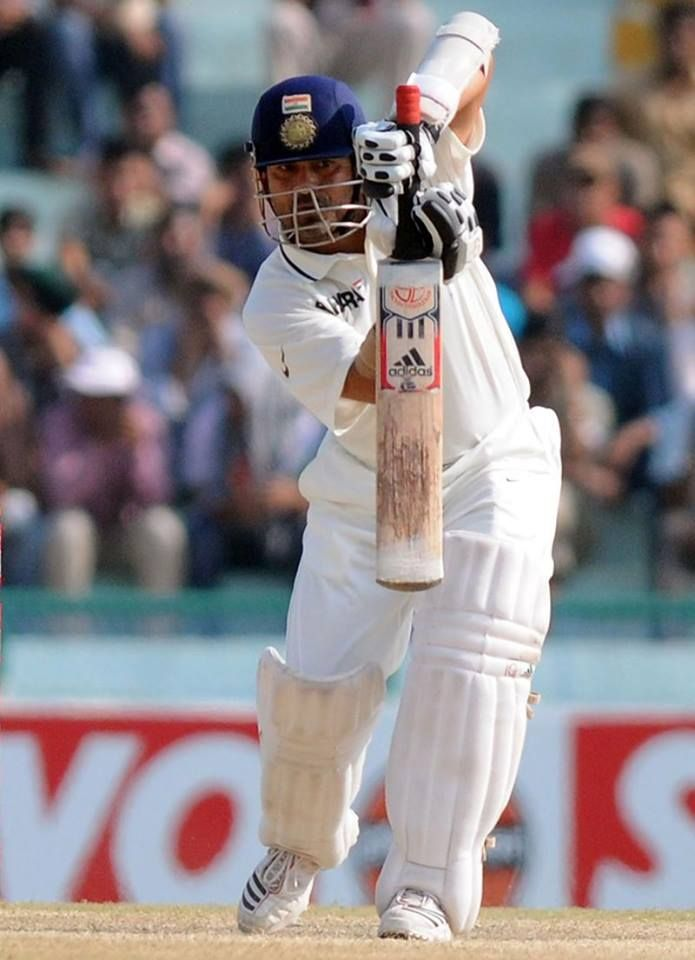

The Master Blaster
Widely regarded as one of the greatest batsmen in the history of cricket, Sachin Tendulkar dominated the sport for over two decades. He holds numerous batting records and inspired millions of fans around the world.

Mini Career Stats
- Test Matches: 200
- Test Runs: 15,921
- ODI Matches: 463
- ODI Runs: 18,426
- Total International Centuries: 100
Learn More
Check out his full profile on ESPNcricinfo.